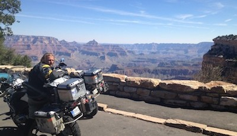
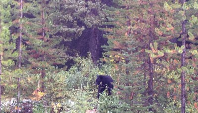

Ameerika
4 kommentaari
Loodus on meie Ameerika teekonnal mitmekesisem, kui Aasias. Mäed, liustikud, metsad, põllud, järved, kõrbed, jõed-kanjonid, kaktused jne. Kui Aasias liikusime peamiselt maastikul, siis siin enamuse ajast asfaldil ja tunne on totaalselt erinev. Siin sõites tundub, justkui ei olekski me looduse sees, vaid oleksime pealtvaaatajad, tarbijad. Võibolla tekitab sellise tunde teadmine, et mõne maa tagant ilmub nähtavale mõni bensiinijaam, kust seina seest tuleb elektrit, vett ja vajadusel ka raha. Kus lisaks kohvile ja mahlale pakutakse veel tuhandet väikest asja. Rahvusparkides viib tähistatud ja pinnatud rada vaatamisväärsuseni, mida saame sadade teiste turistidega nautida. Sellised prassimisvõimalused on küll toredad aga tunneme, kuidas tshakrad sulguvad. Askeetlikkusest pole juttugi. Igas vähegi asustatud külas on basseiniga motell. Tõsiküll osa motelle on päris väsinud ja ropud, ning vaim muutub neis paigus virgemaks. Mugavusest rõõmu tundmiseks, tahaks eelnevalt kogeda ebamugavusi. Proovime neid kunstlikult tekitada. Näiteks tuleb Svenil idee eksperimenteerida ameerika rämpstoiduga. Käime söömas kogupererestoranides nagu Burger King, Wendys, Subway, Danny,s, Ruby Tuesdays. Ja see mõjub. Sven tunneb ennast suhteliselt halvasti – süda on paha ja kõht mulksub. Minul lähevad küünealused mustaks ja habe halliks. Aga lõpuks saab keha ka nende katsumustega hakkama … ilmselt siiski tänu sushile.

Alates Kanadast on meie tee kõrguseks olnud enamasti 1500-2000meetrit. Vahest on tegemist täitsa sileda platooga, siis jälle mägede ja orgudega. Telgime Grand Canyoni ääres ja kuigi päeval oli ligi 30 kraadi ja meil on korralikud magamiskotid, näpistab öösel külm. Hommikul näeme tee ääres põldude vihmutite all korralikke jääkamakaid.

Valime võimalusel väiksemaid teid, mis jäävad suurema transiidi ja turismi trasside vahele. Pühapäeva ennelõunal satume indiaanikülasse, kus sulgede ja rebasesabadega kaunistatud kirevad indiaanlased trummide saatel tantsu vihuvad. Pealvaatajateks on tänapäevaselt riides indiaani perekonnad. Näod on tõsised. Kusagil ei paista ühtegi turisti. Toimub mingi päris asi. Tsakrad avanevad. Lahkume diskreetselt.

Sattus nii, et reisil loeme digiraamatuid, mida võiks liigitada elulookirjanduse alla. Näiteks Stryderit, Federeri, Hvostovi, Jobsi, Zuckerbergi, Nadali ja teekonnale jäävate maade “Minu” sarja raamatuid. Petrone raamatud ei anna küll teab mis entsüklopeedilisi teadmisi, aga tihtipeale on tegemist huvitavate lookestega ja enne riiki jõudmist valmistab see moel või teisel sind ette. Meenub, et raamatu mõjul otsisime Mongoolias illegaalseid kullakaevandusi ja Alm-Atas õunapuuaedu. Samas sarja autorid on erinevad ja alati ei pruugi autori stiil sobida. Paberraamatu puhul oleks kahju paberist, trükivärvist ja trükkali ajast aga digiraamatupuhul saad “Minu Gruusia” lihtsalt kustutada.
Elulooraamtute mõjul räägime kiivriraadios palju oma lapsepõlvest, vanematest, vendadest-õdedest, oma lastest ja muidugi naistest. Raamatud, kus meenutatakse meie lapsepõlve aegseid olusid panevad oma vanematesse suhtuma senisest veel suurema austusega. Meil on ikka kõigi lähedastega väga vedanud.

Ameeriklastel on tihti mingi kiiks, mida ühiskond aksepteerib, kui see kedagi ei sega. Tegemist võib olla mõne veidra hobiga või kõikehõlmava stiili või ajastuga – näiteks metsiku lääne ajas elamisega. Ka meil on oma väike kiiks ning meid ei halvustata. Meie kiiksuks on kiiver ja saapad ning kaitsmetega mootorrattariided. Kaitsevahendid on siin mootorratturite seas haruldased ja tekitavad paljudes heatahtlikku uudishimu. Meil päritakse tihti päritolu, teekonna ja ka UNICEFI kohta. Tundub, et “donation” on siin oma karma parandamiseks igapäevane tegevus ja meie seletused satuvad loodetavsti viljakale pinnasele. Kui Kesk-Aasias oli meil võimalik moel või teisel lastega suhelda, siis siinsed privaatsustingimused on karmimad. Vaadates ringi ongi mõistlik, et suvalisi inimesi igale poole (lastele ligi) ei lasta. Kuuleme palju heasoove ja positiivseid tunnustusi.
Kui Mongoolias kohatsime tervitavaid mopeedijuhte, kel süles lammas ja tagaistmel proua lapsega tihtipeale sellistes teeoludes, kus meil ei olnud võimalik vastu tervitada, siis siin on omaette vaatamisväärsused naistsiklistid. Kohtame palju Harley Davidsonide seljas ringisõitvaid, reeglina alussärgis memmesid. Kiivri kandmine on harvaesinev erand. Ei teagi, mis prouadel arus on. Kas see on vaprus ühendatuna osavusega või lauslollus. Kui me korralikku varustust ei kannaks, oleksime reisi ammu katkestanud ja parimal juhul käiksime üksteist taastusravis vaatamas. Samas – liiklus on kõikjal väga viisakas ja heatahtlik. Meid ei rammita ja lastakse koos läbi. Terve reisi peal ei näe me ühtegi liiklusõnnetust. Teed on puhtad ja korras. Aegajalt näeme siiski tee ääres politseid kedagi kiiruseületuse eest korrale kutsumas.

Selleks, et reis raskem oleks katsetame ka golfiga. On ju kõigil sõpru kes on selle hobi mülkasse vajunud ja sealt välja ei pääse. Järelikult peab olema tegemist karmi alaga. Floridas rannikule jõudes kõplame Tiger Woodsi koduväljakul. On tõesti raske. Vahest tabame siiski ka palli. Poole mängu pealt sõidab meie juurde üks golfiautoga härra, põrnitseb meid kahtlustavalt ja sõidab minema. Mõne aja pärast on härra tagasi ja annab Svenile kingad öeldes, et murul on mingid okkad ja plätudega on ohtlik. Tegelikult ei ole mingeid okkaid kuskil. Varjun igaks juhuks oma Crocsidega lohku ja uurin tähelepanelikult kepiotsa, justkui oleks seal häiriv kriim. Sven hakkab pärast jalanõude vahetamist märkimisväärselt paremini mängima. Ta virutab kolm palli hämmastava stabiilsusega täpselt samasse kohta, tiigi keskele. Saame aru, et golfiga tegelemiseks on õige varustus kriitilise tähtsusega. Juhuslikult on klubis müüa hunnik kaotatud keppe 1 dollar tükk. Sven valib endale 7 erineva firma keppi aga mulle tundub, et on mõistik eelistada sama firmat, ning valin komplekti keppe, mille otsale on suurelt graveeritud “P”. Ilmselt on tegemist Profi keppidega. Kahjuks ühe dollari eest neid suuremaid (vist algaja) jurakaid ei müüda. Sven mõtiskleb soetatud golfikeppide potensiaalsest kasutusest oma Muhu talus ja minu golfikavatsused on seotud Haanjaga. Lasen ilmselt ühel kepil relakaga serva teravaks – hea tiigiserva puhastada.

Algne plaan oli sõita New Yorki aga teel saame kontakti Floridas rahvusvahelise kaubaveoga tegeleva Ainiga, kes on valmis mõistliku hinna eest tsiklid Euroopasse transportima. Veedame Aini juures meeleoluka õhtu, mis algab perenaise supiga ja lõpeb muusikabaaris krokodillitiigi ääres. Tsiklid paneme teele Miamis.

Ameerika etapp, ligi 10 000 km ja 14 osariiki, ei olnud kaugeltki nii põnev, kui Aasia. Natuke kahju, et metsa läks meie Alaska plaan. Olime küllalt lähedal aga see oleks olnud liigne risk. Küll jõuab kunagi veel seal rahulikult ära käia. Reisi algul oli Sven Ameerika suhtes negatiivselt meelestatud aga nüüd natuke leplikum. Mitte, et oleks tegemist ameerika fänniga aga mingi võlu ta siiski leidis. Hoolimata sellest, et tegemist on tööstusmaaga, on nad suutnud oma loodust väärtuslikemates kohtades säilitada. Hoolimata sellest, et nad tarbivad metsikult palju, ei näinud me suuri prügihunnikuid. Hoolimata sellest, et seal on lõputus koguses autosid, ei sattunud me suurtesse ummikutesse, teed on veel lõputumad. Tööstuspiirkonnad paiknevad üheskoos ja elukeskkonnast eemal. Vaadates kogu seda asjade, masinate, teede ja ehitiste hulka on täiesti arusaamatu kust see kõik tulnud on ja kuidas ülejäänud maailm veel alles on. Kuskil peaks olema grandioosne auk.
Osad inimesed söövad s..tta, ei liiguta end kuigipalju ja on paksud aga neid ei ole enamus. Palju on jõukat keskklassi, kel on tööd ja piisavalt vaba aega, et tegelda neile meeldiva tegevusega, ükskõik kui totter see meile ka ei näiks. Meie enda tegevus ei ole ka alati kõige ratsionaalsem. Kolmanda, Euroopa etapi sõidame järgmisel kevadel, kui lumi sulanud. Kõike head.

ps pisut parema kvaliteediga pildid on siin
Rocky mountains, Montana, Nevada, Idaho, Arizona Las Vegas, Grand Canyon, New Mexico
3 kommentaariToksisin pika teksti aga see kadus nüüd kuskile ära.
Leviga on kohati keerulisem, kui Mongoolias.
Lühidalt:
Teel satume pidevalt friikide kokkutulekutele aga tunneme ennast kõikjal suhteliselt koduselt. Ei saagi aru, kas toimetame unes, käib mingi film või toimub tegevus päriselt. Ärgata tahaks. Või siis lõputiitreid.
Mingit usku me ei ole vastu võtnud. Pakutud on aga küll. Vastu oleme pakkunud muljeid reisust ja oma missioonist.
Las Vegasest lahkusime sama seisuga, mis sisenesime – ei abiellunud, ei mänginud raha maha.
Ja Grand Canyon on endiselt äge.
Panime pilte ja homme paneme edasi.

Kanada, British Columbia
3 kommentaariMeie tee Vancouverist põhja algab piki rannikut, kus lahed ulatuvad sisemaale lumiste tippudega mägedeni. Metsad ja suusakuurortid vahelduvad mäe- ja metsatööstusküladega. Sisemaal läheb maastik küll pisut tasasemaks, aga kärestikulised jõed tee ääres jätkuvad. Peatudes äratavad meie Euroopa registrinumbrid tähelepanu ja kuuleme kohalike käest, et oleme oma reisiga Alaskasse hiljaks jäänud. Külmad ilmad ja sademed on alanud. Ööbime metsatööstuskülas ning jätkame teed suurimasse British Columbia rahvusparki, Jesperisse. Teel vaheldub 30 kraadine soojus 13 kraadise külma ja vihmaga. Sügis on käes, lehed puudel kirjud. Hommikul ärgates sajab paksu uduvihma ja siinsamas kõrval, paarsada meetrit kõrgemal näeme öösel sadanud lund. Õhk on karge nagu Alpides, aga vastupidiselt tavalisele Alpides viibimisele me värskelt sadanud lumest ülemäärast rõõmu ei tunne. Tsiklitel on all asfaldikummid ja edasi sõitmiseks tuleb ilmselt aeg maha võtta kuna peame ületama paar kõrgemat kuru, kus tõenäoliselt on lumi. Alaska jaoks on meil tänu ühele sõbrale varuks siiski üks väikene plaan….

Täna peaksime kohalike kinnitusel nägema ka esimesi karusid…
… ja karu me ka näeme. Vahetult enne Trans-Kanada Highway peale jõudmist, Lake Louise lähedal, sööb üks mustkaru tee ääres võsa. Teel saame päikest, tuult, vihma, rahet, lörtsi ja lund. Temperatuur langeb kohati 1,5 kraadini.

Hetkel on ainsad pisut häirivateks asjaolud, et me ei tea kuidas saada tsiklid New Yorkist Lissaboni ja kuhu on kadunud Tarvi.
ps Panime locationi lehele ühe lingi, kus praegune asukoht… millegipärast osade brauseritega kaardifail asukohainfot ei kuva.
Alustasime Ameerikaga
1 kommentaarPeale pikka ootamist ja tihedat kirjavahetust USA tolliga saime eile tsiklid Seattles lõpuks ikkagi kätte. Oodates ei raisanud me niisama aega. Muude huvitavate tegevuste hulgas mängis Sven esimest ja mina kolmandat korda elus golfi. Me ei hakanud mingite kursustega ega treeningutega jamama vaid mängisime kohe 18 auguga rada. Huvitav, et meid üldse peale lasti ja huvitav, et ära ei aetud. Hiljem saime teada, et meie mängustiili nimi on MilitaryGolf. See käib nii, et lööd kaikaga palli võimalikult varjulisse kohta, soovitavalt võssa. Siis ragistad natuke võsas, hüüad “Got it”, nagu oleks oma palli leidnud (tegelikult poetad taskust uue palli) ja virutad palli teisele poole muru ja varjud sinna. Leidsime palju palle. Vahest leidsime omaniketa palle lausa murult ja see oli muidugi kerge saak. Pahatihti ilmus omanik siiski välja ja pidime taas varjuma põõsastesse. Või puu taha. Meil oleks Golfile välja pakkuda mitu olulist täiendust mis mängu nauditavamaks muudaks. Näiteks oleks oluline raja külgedele paigaldada võimalikult kõrged võrkseinad. Kindlasti peaks iga raja lõpus sileda ala ja väikse auguga muru asemel olema lehtrikujuline muru (keskel auguga). Võib kaaluda võimalust lehter asendada lihtsalt suure auguga, millega rada lõpeb.
Täna saime tsiklitel vahetatud õlid-filtrid-kummid ning oleme juba teel planeeritud alguspunkti, Alaskasse. Natuke oleme Alaskaga hiljaks jäänud, seal ülevalpool pidi ilm juba keeruline olema, aga kuigi kaugele ikka jõuame. Hetkel Vancouveris, Kanadas. Ees ootab British Columbia, väidetavalt karude, rohke lume ja liustikega suhteliselt metsik piirkond. Üritame võimalusel pilte panna ja vahest kirjutada ka.


{kind=link}
{kind=link}